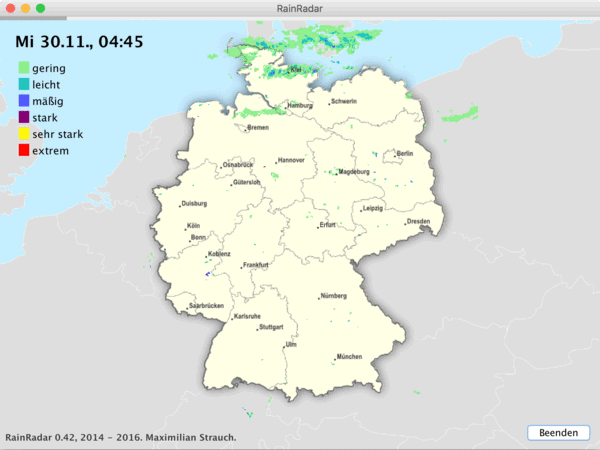

RainRadar is a viewer of recent RADAR images of Germany, displayed in front of a map of Germany. I worte this program for a friend who wanted to know if it is going to rain when he wants to drive back home after work with his motorcycle.
The application is not that complicated: it downloads the RADAR overlay images from wetter.info and displays them on top of the map of Germany (which I created using Inkscape and the OpenClipart library). Every 15 minutes the program checks if a new image is available and appends it to the list of collected images. All collected images are displayed in a »movie« which looks like:

Animated GIF file which shows the look and feel of the RainRadar application.
My friend has often opened RainRadar on his second screen when I'm visiting him at work. You can checkout the source files and get a running copy of RainRadat at the RainRadar Git repo.
RainRadar goes Pi
To make things more interesting I recently created a self-contained SD card image for the Raspberry Pi to make a »RainRadar kiosk«. The vision is to create a small unit which can be wall-mounted at a public place at my friend's workplace the let all employees participate.
To keep the image as small as possible I experimented at first with buildroot but eventually switched over to a Raspbian Jessie image which I striped down. The kiosk mode is simply done by installing only the XServer and using tools like xstart to launch the application and xdotool to make it fullscreen. The unit looks like:
RainRadar application running on Pi in kiosk mode.
Screenshot of RainRadar.